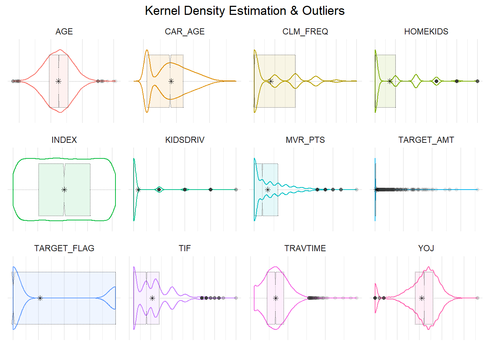
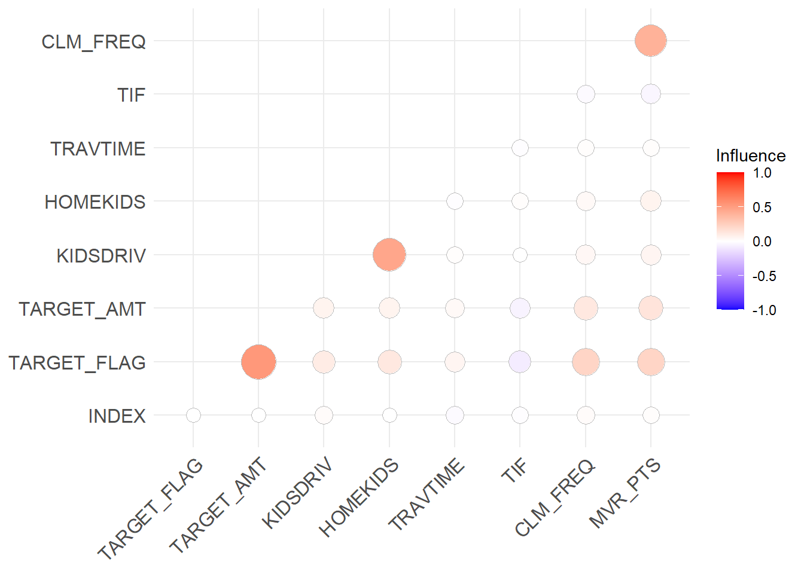
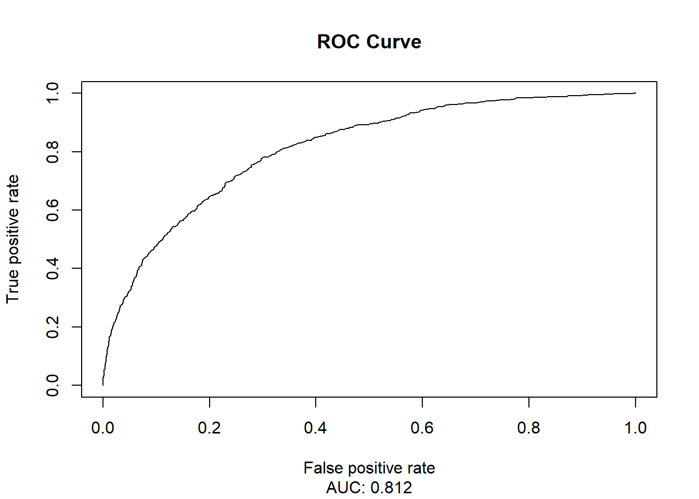

The Challenge
A key part of insurance is charging each customer the appropriate price for the risk they represent.
The challenge is knowing what is most likely to happen before it occurs. If we have confidence in what could occur, then we may better manage our risk. Data science offers a solution to this challenge. Developing advanced computational models with the capacity to crunch high volume data allows us to calculate probabilities of risk for many individuals at scale.
The business need is to predict the probability that a person will submit a claim and then estimate that claim amount. Multiple linear regression and binary logistic regression models were built to answer these questions. We explore, analyze and model with a data set containing records of customer behavior at an auto insurance company. A table with a selection of five variables that represent behavioral characteristics from customer records is shown below with a brief description of each for reference.
Code
# short descriptions of variables as table from matrix
vardesc <- data.frame(matrix(c(
'TARGET_FLAG', 'Was a claim submitted? 1 = Yes, 0 = No',
'TARGET_AMT', 'Estimated amount of claim',
'CLM_FREQ', 'Number of claims filed in past five years',
'MVR_PTS', 'Motor vehicle inspection points',
'TRAVETIME', 'Distance to work in minutes'
), byrow = TRUE, ncol = 2))
colnames(vardesc) <- c('Variable', 'Description')
kbl(vardesc, booktabs = T, caption = "Variable Descriptions") %>%
kable_styling(latex_options = c("striped", "HOLD_position"), full_width = F)| Variable | Description |
|---|---|
| TARGET_FLAG | Was a claim submitted? 1 = Yes, 0 = No |
| TARGET_AMT | Estimated amount of claim |
| CLM_FREQ | Number of claims filed in past five years |
| MVR_PTS | Motor vehicle inspection points |
| TRAVETIME | Distance to work in minutes |
Data Prep
There are over 8000 records in this data set, with 26 variables in each record. We begin by loading in the data and exploring.
When exploring we look for missing values and abnormalities and try to find patterns in the records. We calculate some descriptive and inferential statistics that show the characteristics present in the data. These statistics inform us if imputations, transformations, or other adjustments are needed. For example, this violin plot with a box plot inlay, provides a wealth of information.
Kernel Density Estimation & Outliers
tdata %>%
select_if(is.numeric) %>%
gather() %>%
ggplot(aes(value, key)) +
facet_wrap(~ key, scales = "free") +
geom_violin(aes(color = key, alpha = 1)) +
geom_boxplot(aes(fill = key, alpha = .5), notch = TRUE, size = .1, lty = 3) +
stat_summary(fun.y = mean, geom = "point",
shape = 8, size = 1.5, color = "#000000") +
theme_minimal() +
theme(axis.text = element_blank(),
axis.title = element_blank(),
legend.position = "none", plot.title = element_text(hjust = 0.5)) +
labs(title = "Kernel Density Estimation & Outliers") 
Perhaps one of the easiest things to spot in this plot are outliers, shown as grey dots on the left and right sides of the variables. These points are located far from where the rest of the data is, and there are so many that some dots appear solid black due to repeated grey dots plotted in the same spot. Our target amount, the value we intend to predict, is a great example of a distribution with a lot of outliers. These points give a good idea of what ‘normal’ is for each variable but this plot offers some more.
In this plot the asterisk near the center of each boxplot is the median of the distribution for all records that contain the variable named, however, what exactly the median is less important than where it lies within the distribution. The top and bottom edges (the curvy colored lines) of the violin plot use the non-parametric method kernel density estimation (KDE) to smoothly estimate the probability of a value occurring anywhere along its range. Here again, we already notice problems with our target amount. Although not every variable follows this pattern. For these reasons, we need to be careful about how we handle this data before making any predictions.
Another method used to explore and prepare the data is a correlation plot. These examine the strength of relationships between variables, whether they are positive or negative, and how they compare to one another. We take a look at some selected variables in hopes that they confirm some expectations.
Correlation Plot
tdata %>%
select_if(is.numeric) %>%
cor() %>%
ggcorrplot(method = "circle", type="upper",
ggtheme = ggplot2::theme_minimal, legend.title = "Influence") + coord_flip() 
If we are trying to predict the amount of a claim and we have a true or false variable indicating the presence or absences of claim submission (TARGET_FLAG) and the claim amount (TARGET_AMT), shouldn’t we expect the two to be correlated? I would hope so, given that, when an individual does not file a claim, the resultant claim amount is 0. We notice this in the big red circle towards the bottom left of the screen. This shows a strong positive correlation between the amount of a claim and presence of a claim. From this correlation plot we start to confirm these expectations and validate some conventional auto insurance knowledge.
These demonstrate only two ways to look at data before model building. However, to ensure that a model functions in the real world, a multitude of exploratory methods should be used to fully understand the data. To keep it brief, the data is split 70-30 into training and testing data sets, then cleaned up with using the multiple imputation by chained equations (MICE) method, perform a Yeo-Johnson transformation, and adjust other points as necessary to make the non-normal predictor appear normal enough for prediction. A quick look at the imputed summary statistics is shown for four numeric variables as a reference.
Imputed Summary Statistics
imputed.stats.table <- data.frame(matrix(c(0,29707,54028,61469,83304,367030,
0,0,161160,155225,233352,885282,
1500,9280,14440,15710,20850,69740,
0,0,0,4037,4636,57037), ncol = 4, byrow = F))
names(imputed.stats.table) <- c("Income", "Home Value",
"Bluebook Value", "Old Claims")
imputed.stats.table <- imputed.stats.table %>%
mutate(Statistic = c("Min", "1st Quartile", "Median",
"Mean", "3rd Qartile", "Max")) %>%
dplyr::select("Statistic", "Income", "Home Value",
"Bluebook Value", "Old Claims")
kbl(imputed.stats.table,
booktabs = T,
caption = "Imputed Summary Statistics") %>%
kable_styling(latex_options = c("striped", "hold_position"),
full_width = F)| Statistic | Income | Home Value | Bluebook Value | Old Claims |
|---|---|---|---|---|
| Min | 0 | 0 | 1500 | 0 |
| 1st Quartile | 29707 | 0 | 9280 | 0 |
| Median | 54028 | 161160 | 14440 | 0 |
| Mean | 61469 | 155225 | 15710 | 4037 |
| 3rd Qartile | 83304 | 233352 | 20850 | 4636 |
| Max | 367030 | 885282 | 69740 | 57037 |
Model Building
Our objective was to build multiple linear regression and binomial logistic regression models to predict the amount of auto insurance claim. We explored, analyzed, and prepared the data as best we could in an attempt to improve the predictive outcome. The manner in which these were built is detailed in the Caret Model code chunk.
Caret Models
# Model 1: Establish Baseline
# This models uses only previous accident as a predictor
model1 <- glm(TARGET_FLAG ~ previous_accident,
family = binomial(link = "logit"), train)
# Model 2: Experimentally Determine Best Features by Hand
# These features were selected by alpha level and intuition
model2 <- glm(TARGET_FLAG ~ previous_accident +
city + young + clean_rec +
educated, family = binomial(link = "logit"), train)
# Model 3: Add Recommended Risk Predictors from III
# This model takes another step towards improving accuracy
model3 <- glm(TARGET_FLAG ~ previous_accident +
city + mstatus + income.values +
sex + car_use + educated + KIDSDRIV +
revoked, family = binomial(link = "logit"),
train)
# Model 4: All in One
# Examine results with all variables included, what worked?
model4 <- lm(target_amt ~ ., train)
# Model 5: Linear Regression with Dollar Estimators
# This model leans heavy on the variables with specific dollar figures
model5 <- lm(target_amt ~ income.values +
home.values + bluebook.values +
oldclaim.values + avg_claim,
train)
# Model 6: Multidirectional StepAIC Regression
# This uses a Stepwise Akaike Information Criteria to evaluate
# and select predictors in the model with some special data prep
model6 <- lm(target_amt ~ . -TARGET_AMT -TARGET_FLAG, train)
pm <- stepAIC(model6, trace = F, direction = "both")Another model wherein everything but the kitchen sink was thrown at it (aptly known as the kitchen sink model), gave us insights into which variables were significant to use and what their effect on the model would probably be. Of course, with a model that contains over 30 variables, there is room for some complex interactions to occur. We rely on our exploration and analysis to guide us in the creation of additional models alongside the results from the kitchen sink model, historical model, and conventional wisdom from the auto insurance domain.
Since we humans tend to poorly judge relationships represented as mathematical operations, a stepwise AIC model was created to do a lot of work for us. This model performs a check by cycling through the variables both forwards and backwards to pick the variables that are most likely to improve the predictive capacity of the model. The AIC just stands for Akaike Information Criterion which is an estimator of prediction error. In this model, when stepping (or cycling) through variables, we are using this criterion to select variables that reduce the amount of error present in the model. Ideally, this will improve model quality and output.
We finish with some general predictions of each model type. We created a historical model, kitchen sink model, a multidirectional stepwiseAIC, backward stepwiseAIC, high risk predictor model, and a conventional wisdom model using information from the Insurance Information Institute (III). These will be put to the test in the model selection process. Which one do you think will perform best?
Model Selection
To standardize the process of model selection, a function is created wherein all statistics are computed the same way. It begins by bringing in the holdout data we created in the data prep section. This is named the test data. With this we evaluate how accurately the model predicted the result. We then compute a confusion matrix which contains the rates of false positives, true positives, false negatives, and true negatives and estimate model specificity, sensitivity, precision, and recall with those values. These combined measures let us find the F1 score, and from them we can create a receiver operating characteristic (ROC) plot and find the area under the curve (AUC). These provide details about the accuracy and real-world effectiveness of a model.
As a quick reference, we show the results from one of the best models, that of the multidirectional stepwiseAIC. The receiver operating characteristic curve is plotted alongside text containing the accuracy, its bounds, how precise and sensitive it is as well as multiple significance values including McNemars p-value and an accuracy p-value. Each model went through this evaluation process.
Model Summary
# Create Function to Evaluate All Models
modstat <- function(model, test,
target = "TARGET_FLAG", threshold = 0.5){
# test model using predictions with test data
test$new <- ifelse(predict.glm(
model, test, "response") >= threshold, 1, 0)
# create confusion matrix with stats
# shows true positive, false positive, and their inverse
cm <- confusionMatrix(factor(test$new),
factor(test[[target]]), "1")
# Organize information into data frame
df <- data.frame(obs = test$TARGET_FLAG,
predicted = test$new,
probs = predict(model, test))
# Calculate performance and significance values
Pscores <- prediction(df$probs,
df$obs)
# AUC = "Area Under the Curve"
AUC <- performance(Pscores,
measure = "auc")@y.values[[1]]
pscores <- performance(Pscores,
"tpr", "fpr")
# Plot the scores of true positive/ false positive
# This is a receiver operating characteristic (ROC) curve
plot(pscores,main="ROC Curve",
sub = paste0("AUC: ",
round(AUC, 3)))
# Extract the F1 score
# place it below the plot for each model when run
results <- paste(cat("F1 = ",
cm$byClass[7], " "), cm)
# Output results with a ROC curve and all scores
return(results)
}
# Calculate and show ONLY model 6 for quick reference
modstat(model6, test)
F1 = 0.4838057 [1] " 1"
[2] " c(1699, 113, 397, 239)"
[3] " c(Accuracy = 0.791666666666667, Kappa = 0.36653677545056, AccuracyLower = 0.775030346732191, AccuracyUpper = 0.807602177444679, AccuracyNull = 0.740196078431373, AccuracyPValue = 1.62575683811825e-09, McnemarPValue = 5.02353275353728e-36)"
[4] " c(Sensitivity = 0.375786163522013, Specificity = 0.937637969094923, `Pos Pred Value` = 0.678977272727273, `Neg Pred Value` = 0.810591603053435, Precision = 0.678977272727273, Recall = 0.375786163522013, F1 = 0.483805668016194, Prevalence = 0.259803921568627, `Detection Rate` = 0.0976307189542484, `Detection Prevalence` = 0.143790849673203, `Balanced Accuracy` = 0.656712066308468)"
[5] " sens_spec"
[6] " list()" Conclusion
Risk varies widely from customer to customer, and a deep understanding of different risk factors helps predict the likelihood and cost of insurance claims. Many factors contribute to the frequency and severity of car accidents including how, where and under what conditions people drive, as well as what they are driving. We developed 6 models. Half of these were multiple linear regression models and the other half were binomial logistic regression. Both have their benefits in the right context.
Comparison Table
mod.stats.table <- data.frame(matrix(c(
"Model 1", 0.722, 0.757, 0.5, .01,
"Model 2", 0.732, 0.767, 0.58, 0.333,
"Model 3", 0.754, 0.788, 0.625, 0.422,
"Model 4", 0.998, 0.999, 0.999, 0.999,
"Model 5", 0.719, 0.753, 0.514, .090,
"Model 6", 0.775, 0.808, 0.657, 0.484),
nrow = 6, byrow = T))
colnames(mod.stats.table) <- c("ID", "Lower Bound", "Upper Bound",
"Balanced Accuracy", "F1 Score")
mod.stats.tableWith an accuracy between 78 - 81%, the multidirectional stepwiseAIC model wins the contest between these two model types. It was also the most useful real-world model with a balanced accuracy at 65.7%. Its F1 score was 0.484, indicating the relationship between precision (how well it predicts true positives) and recall (ratio of correct positives in the predictions) is better than any other method of modeling.
In this table we reviewed the model’s lower and upper accuracy bounds, its balanced accuracy, and F1 scores. The results show Model 3, our other stepwiseAIC, is the runner up. Model 4 is the only model that appears to have been too effective, and is not realistic for a variety of reasons. Perhaps the most important being over-fitting.
Of these factors in prediction, balanced accuracy is likely the best criteria to judge the models on in this scenario. This is because it finds arithmetic mean of sensitivity and specificity which tends to represent imbalanced data better than accuracy alone. Since our data set was highly imbalanced and the target class of claim amount appeared much less than the non-target class, this accuracy estimate helps balance expectations.
Of course, these predictions could be improved. When building models, it may be a good idea to perform some feature engineering to better isolate the riskiest and least risky customers. Other model types may also offer new insights.
For more, view the full report on my GitHub page.